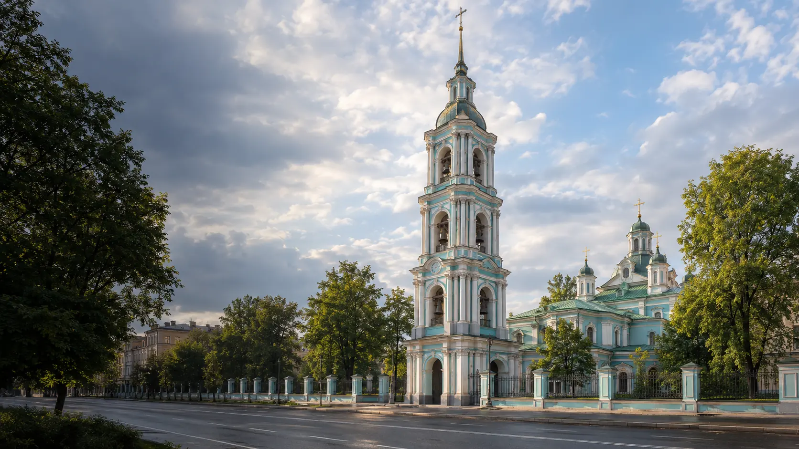

ПМЦ «МИР»
Центральный
пр. Энгельса, д. 147, к. 1, лит. Д
Смотреть клуб
Клубы и молодёжные площадки
Девять площадок двух учреждений: ПМЦ «МИР» и Дома молодёжи «Форпост». Ищи занятия и адреса рядом с собой.
Найти площадкуСведения взяты из городской базы. Перед посещением уточняй набор, возраст, расписание и контакты.
Каталог района
Показано 9 площадок
пр. Энгельса, д. 147, к. 1, лит. Д
Смотреть клубпр. Энгельса, д. 133, к. 1, лит. Д
Смотреть клубпр. Просвещения, д. 46, к. 1, лит. А
Смотреть клубБольшой Сампсониевский пр., д. 108, лит. А
Смотреть клубпос. Парголово, Осиновая Роща, Приозерское ш., д. 18, к. 1, лит. А
Смотреть клубпр. Энгельса, д. 7, лит. Б
Смотреть клубБольшой Сампсониевский пр., д. 37
Смотреть площадкуЛесной пр., д. 61, к. 3
Смотреть клубпр. Просвещения, д. 47
Смотреть площадкуНичего не нашлось. Попробуй другое название или фильтр.
Перед первым визитом
В документах направления указаны как бесплатные. Условия каждой группы могут различаться.
Спроси, для кого открыта группа.
Уточни дни, время и наличие мест.
Узнай, как присоединиться к занятиям.
Контакты учреждений
Контакты учреждения
пр. Энгельса, д. 147, к. 1, лит. Д
Контакты учреждения
Большой Сампсониевский пр., д. 37
Направления, адреса и контакты собраны по PDF ПМЦ «МИР» и PDF Дома молодёжи «Форпост» из городской базы учреждений. Дата загрузки документов: 01.06.2026. Это не дата проверки каждой группы.
В документе «МИРа» есть адрес на пр. Просвещения, д. 54, лит. А без названия площадки, направлений и контактов. До уточнения статуса он не включён в список. Для «Феникса» и «Фестиваля» указаны общие контакты «Форпоста»: прямые контакты в PDF не найдены.